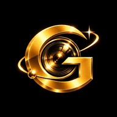
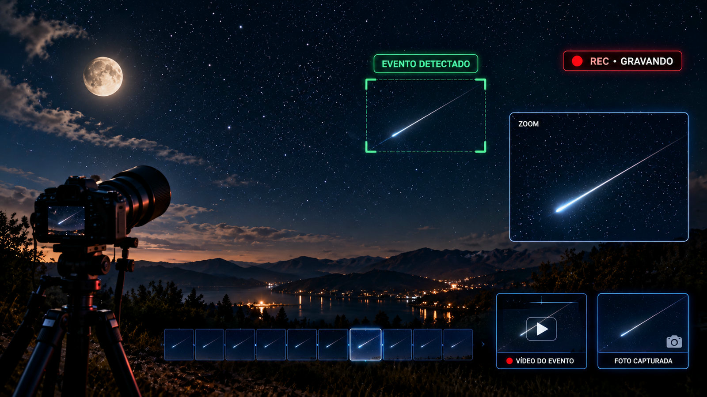
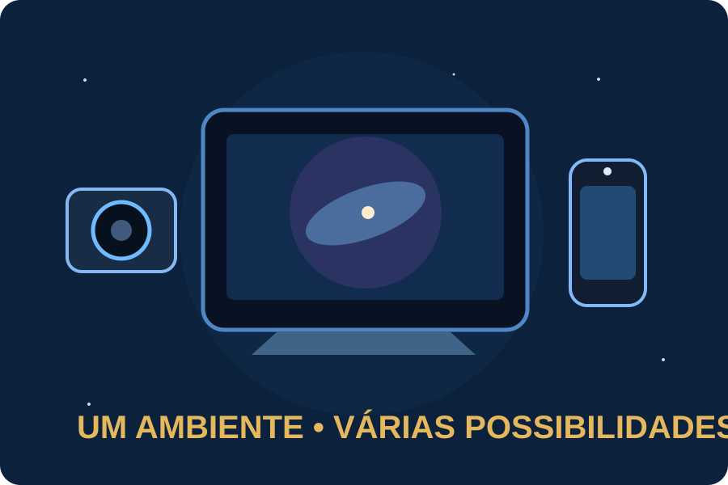
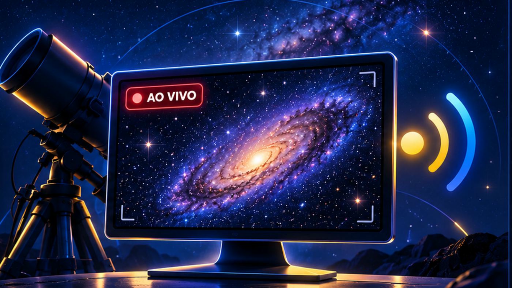
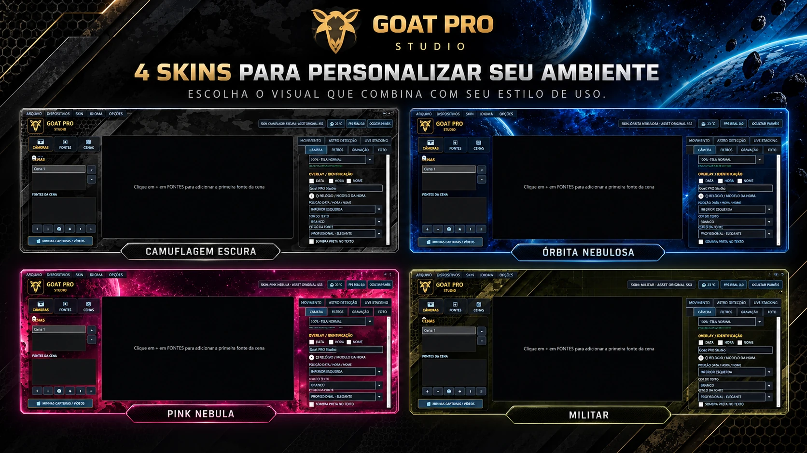

LIVE STACKING
Empilhe imagens e revele mais detalhes do céu
Combine frames durante a observação para destacar objetos de baixa luminosidade.

GOAT PRO StudioSUA ESTAÇÃO DE OBSERVAÇÃO ASTRONÔMICA NO WINDOWS
Use câmeras USB e IP compatíveis, smartphone e câmeras astronômicas para observar, gravar, detectar eventos e transmitir com as ferramentas reunidas em um único programa para Windows.
Compatibilidade e resultados variam conforme a câmera, a configuração e o computador. Integração com GOAT Cam em preparação.

Explore o céu, registre acontecimentos e compartilhe sua observação.
Combine frames durante a observação para destacar objetos de baixa luminosidade.

Monitore o céu e configure a captura de eventos luminosos em vídeo e fotografia.

Centralize as fontes compatíveis, a observação e a captura no mesmo ambiente.

Grave e prepare transmissões de suas observações sem trocar de programa.
Imagens ilustrativas. Compatibilidade e resultados variam conforme o equipamento e as condições de observação.
Seu celular também pode fazer parte da estação. O GOAT Cam transforma o smartphone Android em uma câmera integrada ao GOAT PRO Studio pela rede local, ampliando suas possibilidades sem exigir outra câmera dedicada.
Escolha a aparência que combina com sua estação de observação, captura ou produção.

O desempenho final depende da resolução, FPS, codec, quantidade de câmeras, filtros e recursos utilizados ao mesmo tempo.
Você não está comprando apenas um Live Stack ou apenas um programa de câmera. O GOAT reúne astronomia, astrodeteção, live/streaming, múltiplas fontes, processamento, gravação e o ecossistema GOAT em uma única licença para Windows.
Compra processada pela Kiwify. Após a aprovação, a chave serial é enviada por e-mail, e o instalador fica disponível pelo download protegido. Ativação individual vinculada ao primeiro computador. Confira a compatibilidade antes de comprar.
Compras pela internet: o consumidor pode exercer o direito de arrependimento no prazo legal de 7 dias. Solicitações podem ser feitas pelos canais da Kiwify ou pelo suporte oficial.
O GOAT PRO Studio já inclui recursos de live e streaming no mesmo ambiente de observação, captura e produção. Assim, você pode montar seu fluxo de transmissão dentro do próprio GOAT, junto com suas câmeras, cenas, áudio e overlays.
Não. A live é uma parte do conjunto. O foco do GOAT é reunir observação astronômica, Live Stack, astrodeteção, captura automática de eventos, diferentes tipos de câmera, gravação, processamento e transmissão em um único ambiente.
O GOAT PRO Studio é desenvolvido para Windows. No Android, o GOAT Cam funciona como aplicativo complementar oficial e transforma o smartphone em uma câmera integrada ao Studio pela rede local.
Sim. Esses são dois dos principais diferenciais do produto: empilhamento em tempo real para baixa luminosidade e ferramentas de detecção e registro automático de eventos no céu.
O programa foi desenvolvido para trabalhar com fontes USB e IP compatíveis. A compatibilidade pode variar conforme modelo, protocolo e configuração da câmera.
Após a aprovação do pagamento pela Kiwify, a chave serial é enviada ao e-mail da compra. Utilize a página de download protegido e as instruções de entrega para acessar o instalador.
A licença comercial permite ativação em um computador por vez e fica vinculada ao primeiro PC. Para troca de equipamento, entre em contato com o suporte.
Sim. O GOAT PRO Studio segue em desenvolvimento ativo e novas versões serão disponibilizadas conforme a evolução do produto.
Não. Resolução, FPS, codec, câmera, CPU, GPU e recursos ativos influenciam diretamente o desempenho. Consulte os requisitos e confirme a compatibilidade de sua câmera antes da compra.
O suporte oficial está disponível em goatprostudio.com.br/suporte/. Em compras pela internet, o direito legal de arrependimento pode ser exercido em até 7 dias, pelos canais da Kiwify ou pelo suporte.